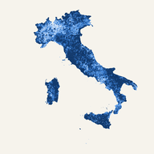

Comune che vaiComune che vai, numero che trovi.
Fonti e dati di ogni video
Per ogni video trovi la fonte originale, come abbiamo calcolato i numeri e i dati comune per comune: da consultare qui o da scaricare in Excel e CSV. Se trovi un errore, scrivilo nei commenti del video.
- 19Stessa città, due mondi: Torino, CAP per CAP10 novembre 2026MEF, 2024 (dichiarazioni presentate nel 2025)
- 1818 · Il tuo comune ha ancora una banca?9 novembre 2026Banca d'Italia, Albi ed elenchi di vigilanza, «Lista succursali banche» (estratto del 6/11/2026); ISTAT, popolazione residente al 1/1/2026; ISTAT, matrici delle distanze e dei tempi di percorrenza tra i comuni (2021), 2026
- 1717 · Paesi con una squadra da professionisti8 novembre 2026Organici 2026/27 di Serie A, B e C (calcio maschile), dal database del calcio di Comune che vai; ISTAT, popolazione residente al 1/1/2026, stagione 2026/27; abitanti al 1/1/2026
- 16Chi dichiara un reddito: contribuenti ogni 100 adulti7 novembre 2026MEF, 2024
- 15Moto e Ape: dove si va in moto (e in motocarro)6 novembre 2026ACI, Autoritratto 2025 (parco veicolare per comune e categoria, al 31/12/2025); ISTAT, popolazione residente al 1/1/2026 e comuni litoranei (SITUAS, caratteristiche del territorio al 1/1/2026), 2025 (veicoli al 31/12/2025)
- 14Anziani per ogni bambino5 novembre 2026ISTAT, 2026
- 13Alluvioni, 60 anni dopo Firenze: chi vive in zona allagabile4 novembre 2026ISPRA, piattaforma IdroGEO, Indicatori di rischio idrogeologico per comune (alluvioni: mosaicatura ISPRA 2020 e censimento ISTAT 2011), licenza CC BY 4.0; aree allagabili di Firenze: mosaicatura ISPRA 2020 delle aree a pericolosità idraulica, CC BY-SA 4.0, aree allagabili 2020, residenti al censimento 2011
- 12Stessa città, due mondi: Napoli, CAP per CAP3 novembre 2026MEF, 2024 (dichiarazioni presentate nel 2025)
- 11Giorno dei morti: dove si muore di più e a che età2 novembre 2026ISTAT, 2025
- 10La patria del calcio italiano è il Molise1 novembre 2026Portale gare LND (organici 2026/27), Registro nazionale delle attività sportive dilettantistiche, registri d’impresa per Serie A, B e C, Wikipedia per la città delle squadre di Serie A, B, C, D ed Eccellenza, ISTAT per la popolazione, 2026/27
- 09Taglio Irpef: chi prende i 500 €31 ottobre 2026MEF, anno d'imposta 2024 (dichiarazioni 2025)
- 08Stessa città, due mondi: Palermo, CAP per CAP30 ottobre 2026MEF, 2024 (dichiarazioni presentate nel 2025)
- 07Paga oraria e valore creato: dal parrucchiere al software29 ottobre 2026ISTAT, Conti economici delle imprese e dei gruppi di impresa, anno 2024 (IstatData, tavola «Tutti i settori economici (Ateco 4 cifre)»), 2024
- 06Consumo di suolo: metri quadri a testa e territorio coperto28 ottobre 2026ISPRA-SNPA, 2025
- 05Pedoni investiti: Liguria maglia nera27 ottobre 2026ISTAT-ACI, 2025 (abitanti al 1° gennaio 2026)
- 04Stessa città, due mondi: Milano, CAP per CAP26 ottobre 2026MEF, 2024 (dichiarazioni presentate nel 2025)
- 0303 · Auto per abitante25 ottobre 2026ACI, Autoritratto 2025: parco veicolare al 31 dicembre 2025 (autovetture per comune; per provincia, autovetture per tipo di intestatario e per uso). ISTAT, popolazione residente al 1° gennaio 2026 (stima). Confronto europeo: Eurostat, 2025, auto al 31/12/2025; abitanti al 1/1/2026
- 0202 · Altitudine dei comuni24 ottobre 2026ISTAT, Altimetria dei comuni al 31 dicembre 2021 (pubblicata il 15 aprile 2026) e popolazione residente al 1° gennaio 2026 (stima), quote 2026 (confini al 31/12/2021); popolazione al 1° gennaio 2026
- 0101 · Età dei comuni23 ottobre 2026ISTAT, popolazione residente per età e sesso al 1° gennaio 2026 (stima), file dei comuni, 1° gennaio 2026
Caroselli
I caroselli di Instagram e TikTok. Quando riportano la classifica di qualcun altro rimandiamo alla fonte; quando usano dati nuovi, qui trovi anche i file.
- 10/11Derby Bergamo–Brescia: 7 sfide fra le due città e il campionato dei 32 comuni delle due provinceMEF, redditi IRPEF 2024; ISTAT (popolazione al 1/1/2026, censimento permanente 2024, censimento 2011, bilancio demografico 2025, ASIA 2024); ISPRA, consumo di suolo 2025; AGCOM, Broadband Map al 30/9/2026Scarica CSVGuarda su Instagram · TikTok · YouTubeUn gioco di Comune che vai, non un indice ufficiale. Derby: un punto a chi vince ognuna delle 7 sfide (reddito complessivo medio, età media, laureati di 25-64 anni, variazione dei residenti dal censimento 2011 al 31/12/2024, suolo consumato, occupati di 15-64 anni, serie della prima squadra di calcio). Campionato: i 32 comuni delle province di Bergamo e Brescia con almeno 12.500 abitanti; nelle 6 sfide sui numeri il primo prende 32 punti, l'ultimo 1 (pari merito: stessa posizione). Limiti: laureati e occupati del censimento stimati; nati 2025 provvisori; fibra solo per le reti dichiarate ad AGCOM. Musica del reel: «Hidden Agenda» e «Der Kleber Sting» di Kevin MacLeod (incompetech.com), licenza CC BY 4.0. Il file ha i valori, le posizioni e i punti di ogni comune.
- 9/11Derby Pisa–Livorno: 7 sfide fra le due città e il campionato dei 30 comuni delle due provinceMEF, redditi IRPEF 2024; ISTAT (popolazione al 1/1/2026, censimento permanente 2024, nidi 2024/25, bilancio demografico 2025, ASIA 2024); ISPRA (IdroGEO, consumo di suolo 2025); ACI, auto al 31/12/2025; Corte dei conti, comuni in crisi finanziaria al 31/12/2025Scarica CSVGuarda su Instagram · TikTok · YouTubeUn gioco di Comune che vai, non un indice ufficiale. Derby: un punto a chi vince ognuna delle 7 sfide (reddito complessivo medio, residenti in aree a pericolosità idraulica media P2, età media, quota di auto Euro 0, posti al nido ogni 100 bambini 0-2 anni, occupati 15-64 anni, categoria della prima squadra di calcio). Campionato: i 30 comuni delle province di Pisa e Livorno con almeno 5.000 abitanti; nelle 6 sfide sui numeri il primo prende 30 punti, l'ultimo 1 (pari merito: stessa posizione). Limiti: aree allagabili 2020 con residenti 2011; occupati del censimento stimati; nati 2025 provvisori. Il file ha i valori, le posizioni e i punti di ogni comune.
- 3/11Giro d'Italia 2027: le 39 sedi di tappa, 16 per la prima volta, e tutte le sedi dal 1909 per regione e paesePercorso: giroditalia.it (presentazione del 3/11/2026). Storico: Wikipedia, «Sedi di tappa del Giro d'Italia», dati fino al Giro 2026Scarica le tappe (CSV)Scarica le sedi 2027 (CSV)Scarica lo storico per regione e paese (CSV)Guarda su Instagram · TikTokLo storico viene da Wikipedia (CC BY-SA, https://it.wikipedia.org/wiki/Sedi_di_tappa_del_Giro_d%27Italia), non dall'organizzatore, e conta le località con il nome ufficiale della tappa, non i comuni (Monte Zoncolan e l'Autodromo del Mugello sono a parte). Piani di Bobbio/Valtorta non è contato tra le prime volte perché c'è già stato un arrivo a Barzio. I 5 passi sul confine tra due regioni sono contati nella prima regione indicata da Wikipedia. File: le 21 tappe, le 39 sedi (con comune, codice ISTAT, abitanti e volte da sede fino al 2026), le volte da sede per regione e per paese dal 1909 al 2026.
- 1/11Palermo, zona per zona: le 24 zone dei codici postali, dalla prima all'ultimaMEF – Dipartimento delle Finanze, redditi IRPEF 2024 per CAPGuarda su InstagramSeguito del video 08: la pagina del video ha fonte, metodo, la mappa delle 24 zone e la ricerca per quartiere.
- 29/10Quante auto nel tuo capoluogo? I 119 capoluoghi, dal primo all'ultimoACI, Autoritratto 2025 (auto al 31/12/2025); ISTAT, abitanti al 1/1/2026Guarda su InstagramSeguito del video 03: la pagina del video ha fonte, metodo e le auto ogni 100 abitanti di tutti i comuni. Le classifiche del carosello non contano i 7 capoluoghi delle province dove è a noleggio più del 5% delle auto (Trento, Aosta, Firenze, Bolzano, Reggio Emilia, Torino, Roma).
- 26/10Ecosistema Urbano 2026: la classifica ambientale dei 106 capoluoghiLegambiente e Ambiente Italia con Il Sole 24 Ore, Ecosistema Urbano 2026Guarda su Instagram · TikTok · YouTubeClassifica di Legambiente, riportata com'è: la classifica completa e i 20 indicatori di ogni capoluogo sono sulla pagina della fonte.
Come leggere i file
Una riga per comune
I comuni sono 7.896, con i codici ISTAT in vigore nel 2026. Il codice permette di unire i nostri file con qualsiasi altro dato ISTAT.
Fascia e valore
La fascia è il colore del comune sulla mappa del video. Quando c'è la colonna del valore, è il numero esatto calcolato per quel comune.
Numeri del video
Ogni numero mostrato o detto nel video, con il comune a cui si riferisce e come è stato calcolato.